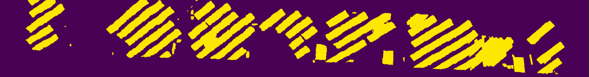

|
| |
|
|
| |
|
| In order to estimate the seismic structural parameters of the buildings the following modules have been introduced:
|

This module provide us the distance between two adjacent buildings. We sampled the images from the videos captured by UAV and perform panoptic segmentation using state-of-art deep learning model, eliminating vegetation (like trees) from the images. The masked images are then fed to a state-of-the art image-based 3D reconstruction library which outputs a dense 3D point cloud. We then apply RANSAC for fitting planes between the segmented structural point cloud. Further, the points are sampled on these planes to calculate the distance between the adjacent buildings at different locations.
Sub-figures (a), (b) and (c) and (d), (e) and (f) represent the implementation of plane fitting using piecewise-RANSAC in different views for two subject buildings.
This module provides information regarding the shape and roof area of the building. We segment the roof using a state-of-the-art semantic segmentation deep learning model. We also subjected the input images to a pre-processing module that removes distortions from the wide-angle images. Data augmentation was used to increase the robustness and performance. Roof Area was calculated using the focal length of the camera, the height of the drone from the roof and the segmented mask area in pixels.
This figure represents the roof segmentation results for 4 subject buildings.
This module provides information about the roof layout. Since it is not possible to capture the whole roof in a single frame specially in the case of large sized buildings, we perform large scale image stitching of partially visible roofs followed by NSE detection and roof segmentation.
Stitched Image
Roof Mask
Object Mask
If you have any question, please reach out to any of the above mentioned authors.